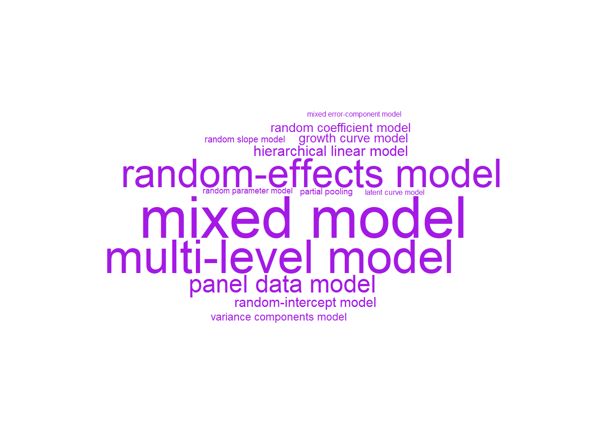
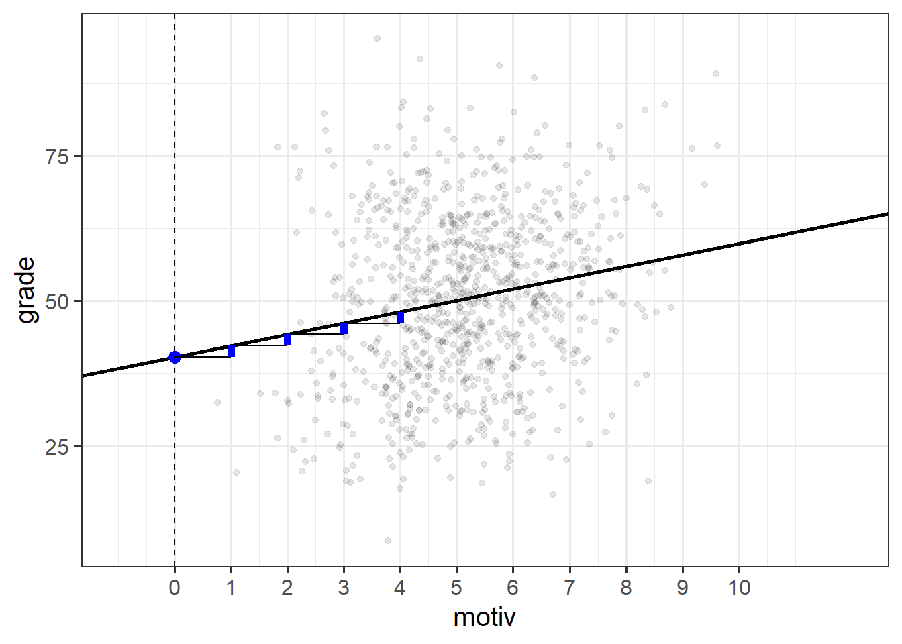

1B: Linear Mixed Models/Multi-level Models
A Note on terminology
The methods we’re going to start to look at are known by lots of different names (see Figure 1). The core idea is that model parameters vary at more than one level..
LMM
In the simple linear regression model was written as \(\color{red}{y} = \color{blue}{b_0 + b_1x_1 \ + \ ... \ + \ b_px_p} \color{black}{\ + \ \varepsilon}\), the estimated coefficients \(\color{blue}{b_0}\), \(\color{blue}{b_1}\) etc., are estimated as a fixed value.
In the example where we model School children’s grades as a function of their motivation score, we can fit a simple regression model, and the estimated parameters are two values that define the intercept and the slope of the line in Figure 2.

These two values are fixed. It does not matter what school a child is from, if they score 0 on the motivation scale, then our model predicts that they will get a grade of 40.3 (the intercept).
schoolmot <- read_csv("data/schoolmot.csv")
srmod <- lm(grade ~ motiv, data = schoolmot)...
Coefficients:
Estimate Std. Error t value Pr(>|t|)
(Intercept) 40.2776 1.8270 22.046 < 2e-16 ***
motiv 1.9551 0.3422 5.714 1.5e-08 ***
---the linear mixed model (LMM)
fits a distribution of intercepts. a center ( a single value and a spread)
so for a given school, the intercept is b0 + z0i
a fixed number plus some random deviation
intercepts vary slopes vary
no pooling vs partial pooling:
how is it different to fixed eff? “partial pooling” (link back to above) shrinkage - socialist vs liberal analogy?
how/why does it do this? by modelling a distribution of lines
\[ \begin{align}\\ & \color{red}{y} = \color{blue}{b_0 + b_1x_1 \ + \ ... \ + \ b_px_p} \color{black}{+ \varepsilon}\\ & \text{Where:} \\ & \epsilon \sim N(0, \sigma) \text{ independently} \end{align} \]
fitting LMM in R
lme4 lmer
model parameters
what are the model parameters? i.e. variance components.
eq with model params coloured $$
$$
we can get out estimates of the specific group-lines if we want, but really the model is estimating the variances.
terminology: fixed effects, random effects, variance components
we often use “random effects” to just mean the distribution of random deviations. i.e.
sometimes you might hear “random effect of group” “random effect for group” “random effect [of x] by group”
generally, people are referring to the (1 + ... | cluster) bit.
graphic on how to read it.
intercept >> 1 slope of x >> x | >> varies by these groups >> cluster
a common stumbling block. “effect of x varies by cluster” is not the same as “x varies by cluster”.
estimation
ML and REML
MLE explainer
- problem for lmm est fix > est varcorr > est fix > est varcorr est of varcorr assumes fixed effects are known. this biases var ests to be slightly smaller
a bit like n-1 in formula for sd
REML - OLS to partial out fixef > est varcorr > est varcorr > est varcorr > use GLS to est fixef - in the estimation of varcorr, the fixed effects are 0 by definition
fitting issues
convergence warnings, singular fits